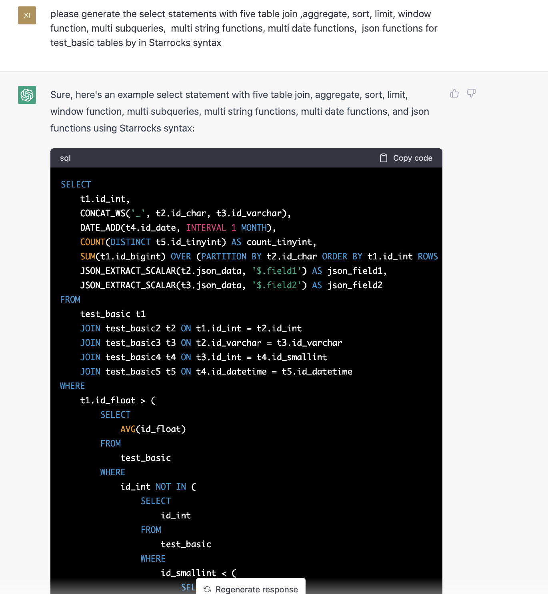
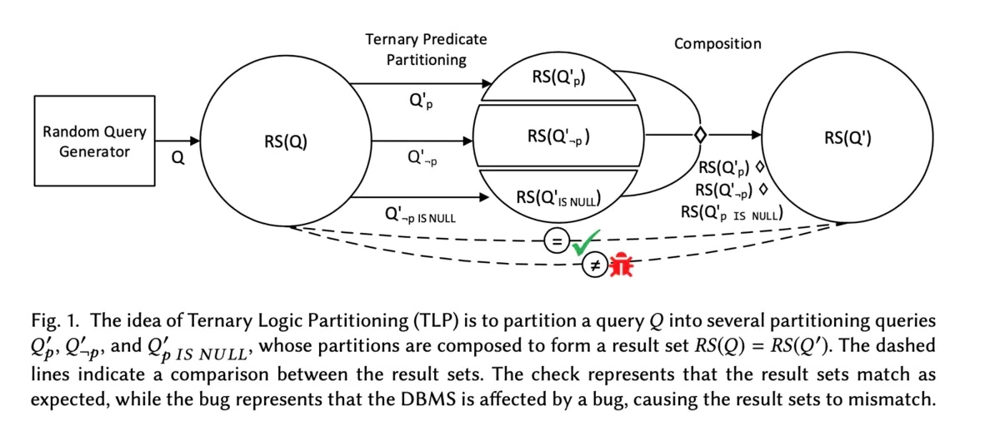

ChatGPT 自动为数据库找 Bug
作者: 康凯森
日期: 2023-02-25
分类: chatgpt
ChatGPT 代替 SQLsmith
SQLsmith 是一款数据库自动化测试工具，主要原理是根据固定的 table schame，生成随机的 SQL，发送到数据库，看数据库会不会 crash。
这一点对于 ChatGPT 没有任何挑战，ChatGPT 可以根据自然语言描述生成任意复杂的SQL，这样 ChatGPT 就可以代替 SQLsmith。

ChatGPT 惊艳的学习能力
下一步我首先想到的是，ChatGPT 能不能解决我们维护 SQLsmith 和 SQLancer 等自动化测试工具的一大痛点： 每当新增函数，算子，数据类型时，我们都需要更新 SQLsmith 和 SQLancer 等工具的源码，及时发现新功能 的 Bug。 所以我就试了一下 StarRocks 的 Json 函数，第一次 ChatGPT 回复 截止 2021年9月，StarRocks 不支持 Json 函数，然后我就给了 StarRocks 的 Json 文档，再让 ChatGPT 生成带 Json 函数 的SQL， ChatGPT 就可以生成了，展现了惊艳的学习能力。
下图是 一开始 ChatGPT 说 StarRocks 不支持 Json 函数：

下图是 我让 ChatGPT 学习 StarRocks 的 Json 函数：

下图是 ChatGPT 成功生成带 Json 函数的 SQL ：

ChatGPT 代替 SQLancer
知道了 ChatGPT 能代替 SQLsmith 后，我就想试试 ChatGPT 能不能代替 SQLancer。 主要试了 SQLancer 的 TLP 方法，

上图是 TLP 原理的示意，简单来说，任意给一个SQL Q，和一个谓词P，这个 SQL Q 经过 P，not P, P is null 3 个谓词过滤后的结果求Union all 和原始 SQL Q的 查询结果集一致。
经过十几次训练后，ChatGPT 就初步具备了依据 TLP 原理生成等价 SQL 的能力：

完整的 SQLancer 的 TLP 测试还需要额外两步，随机创建表，随机插入数据，这个对 ChatGPT 来说很简单，下面几张图是一个完整的流程示意：


ChatGPT 生成 Query-Aware 的建表语句
数据库 SQL 自动化测试主要包括下面3个大点：
- 如何自动建表和数据导入
- 如何自动生成测试 SQL
- 如何自动生成测试 预言（确认 SQL 执行的结果是否符合预期）
数据库 SQL 自动化测试的挑战主要有下面 4 点：
- 要确保自动生成的 SQL 是语法和语义正确的
- 自动生成合法的 Schame 和数据集
- 自动生成的 SQL 代码覆盖度足够高
- 要有高效的方式校验 SQL 执行结果是否正确
所以我再专门测试了 ChatGPT 能不能生成 Query-Aware 的建表语句，Query-Aware 的意思是建表和导入数据是参考查询 SQL 来的，可以保证对应的 SQL 会有查询结果。 这个点对 ChatGPT 的挑战很小：

可以看到生成的 3个建表语句，可以满足对应 SQL Schema 的要求。
总结
从初步测试来看，利用 ChatGPT 进行数据库 SQL 自动化测试的潜力很大，难点在于 ChatGPT 要完全理解一些自动化测试的基础逻辑，比如 SQLancer 的 TLP 测试的基础改写原理，经过我几十次训练后，ChatGPT 还是没有完全理解，改写的 SQL 中谓词可能会出错，但是从理论上讲，经过足够多次的训练后，ChatGPT 完全理解这个逻辑没啥问题，而 ChatGPT 最大的优势，便是其惊艳的学习能力，这可以让 ChatGPT 针对新功能写测试 Case 的效率远远超过人类，之后我会再继续尝试和探索下。
《OLAP 性能优化指南》欢迎 Star&共建
欢迎关注微信公众号